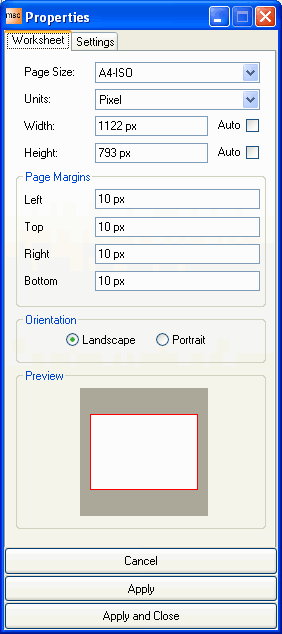

In this dialog you can change the properties of the diagram workspace.
The changes will take effect in the diagram only after you click the button "Apply" or "Apply and Close".
The button "Cancel" closes the dialog and you will lose all changes which have not been applied.
|
 |
 See also
See also